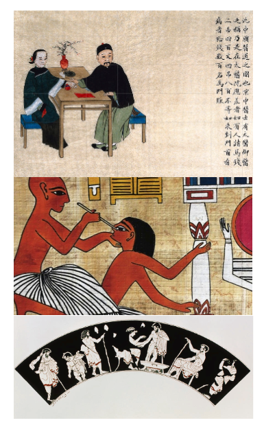
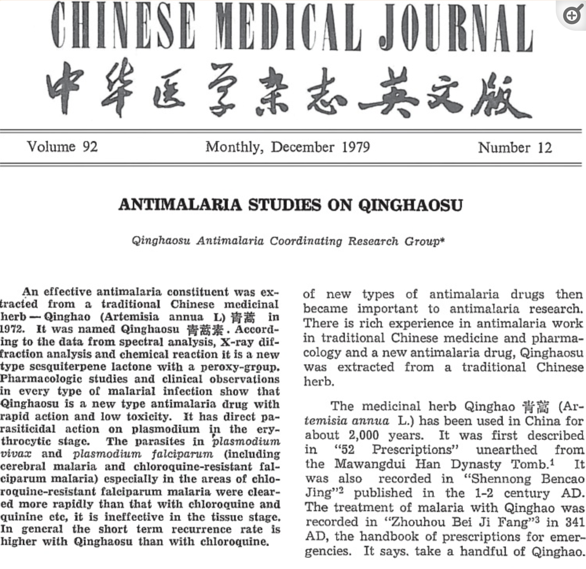
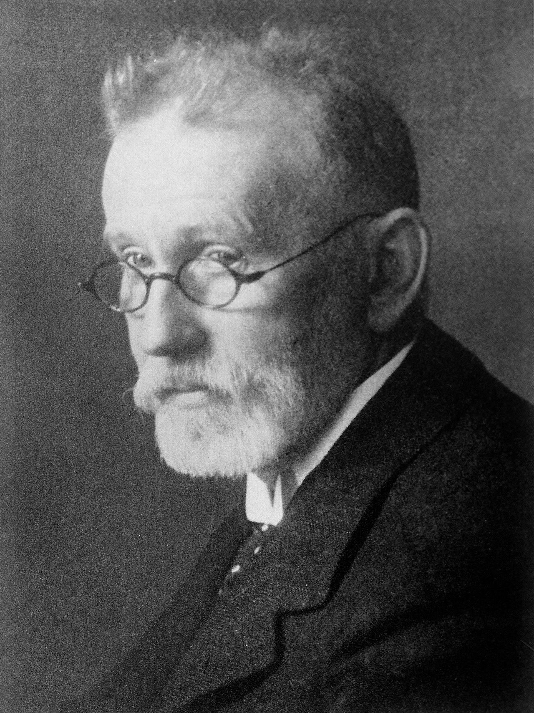
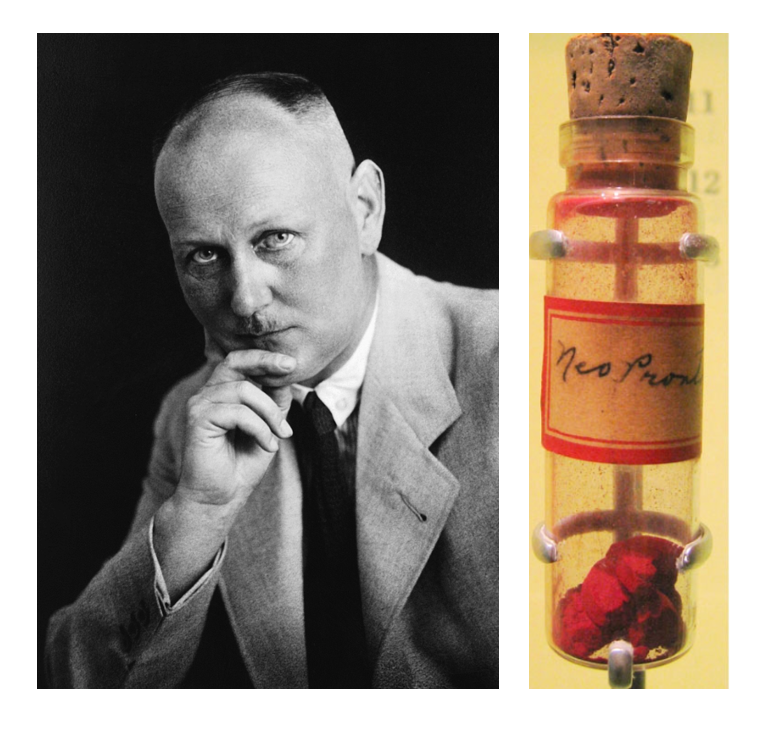
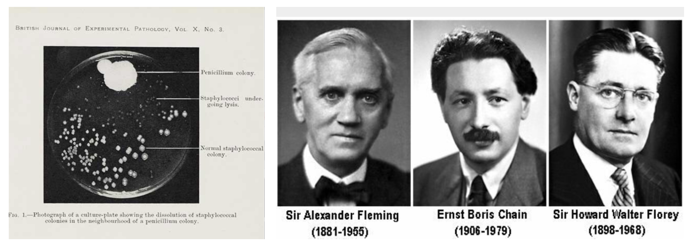
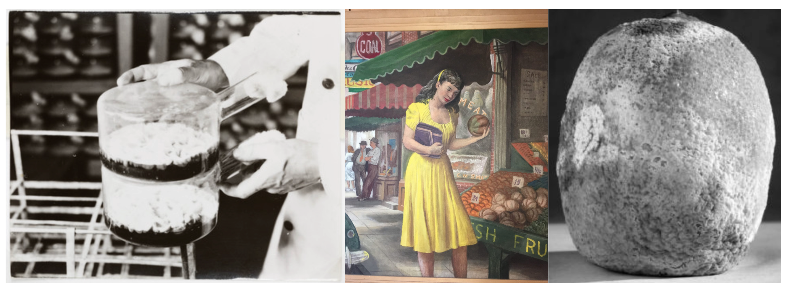
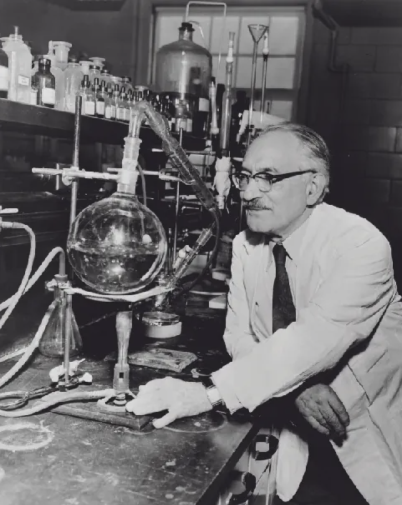
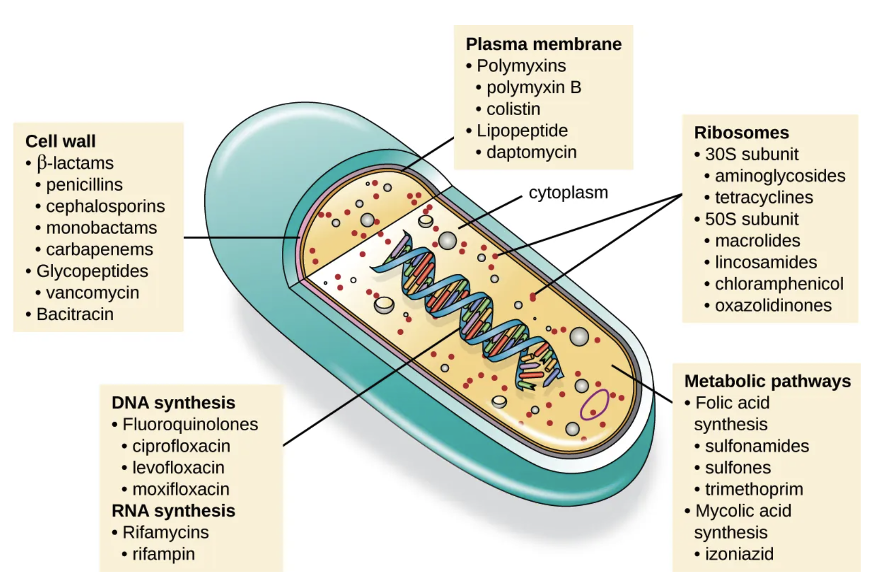
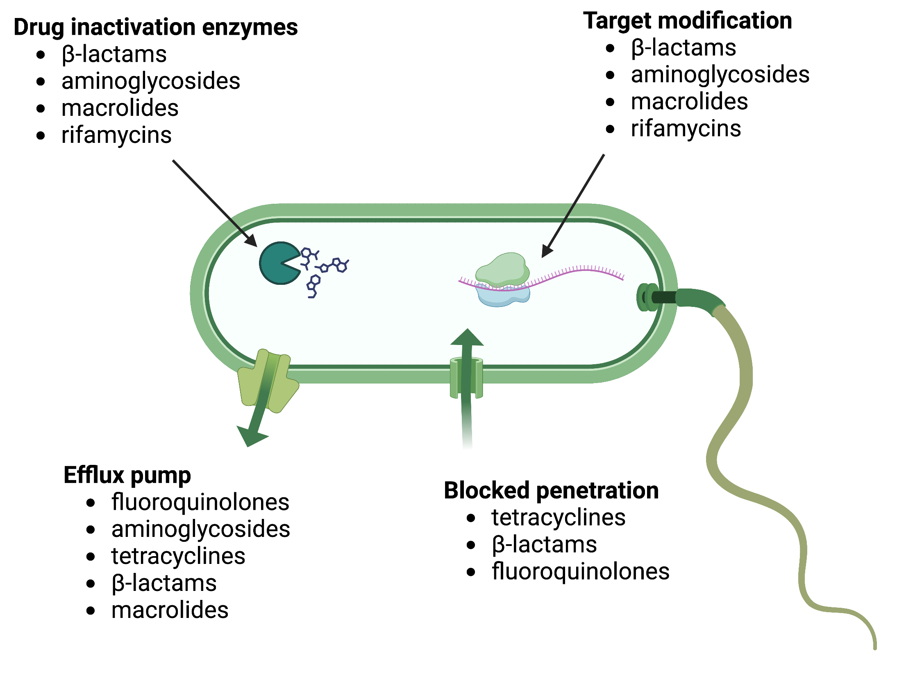
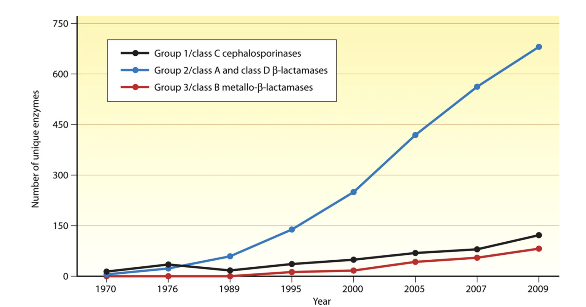

2 History of Antibiotic Development
Compare and contrast natural, semisynthetic, and synthetic antimicrobial drugs
Describe the historically important individuals and events that led to the development of antimicrobial drugs
Identify the key challenges in development of future antibiotics
The impact of antibiotics on human health
Until the 20th Century, influenza, pneumonia, tuberculosis, and enteric infections ranked among the leading causes of death. The average lifespan for adults in Western Europe was around 50 years, with a 2% mortality rate for children under the age of 5 due to premature deaths primarily caused by infectious diseases.
Industrialization and increasing wealth during the 19th century brought improvements in drinking water and sanitation in many countries, leading to reductions in communicable enteric infections and improved in life expectancy Figure 2.1. By the early 20th century, vaccines for pertussis, diphtheria, yellow fever and tuberculosis were introduced. However, common bacterial infections remained a serious medical threat. Streptococcal throat infections were sometimes fatal, ear infections could progress to deafness, mastoiditis or meningitis. Minor surgeries were associated with risk of life-threatening infections. Maternal mortality during childbirth approached 2%.
The introduction of effective antibiotic therapy played a crucial role in further reducing mortality rates associated with common infectious diseases. This breakthrough not only improved the safety of childbirth and common surgical procedures but also paved the way for supportive care during chemotherapy for cancer and transplantation. Thus the discovery of antibiotics can be considered one of the most significant health-related events of modern times.(Davies and Davies 2010)
2.0.1 Ancient use of antibiotics
In nature, some microbes, plants and animals have the ability to produce substances that can inhibit or kill microbes that cause disease or compete for the same resources. These natural products have been the source of many antibiotics and treatments with antimicrobial-like activity over the millennia.
The first recorded use of antimicrobial -like substances was by the early Egyptians, Greeks, and Chinese, who used natural products with antimicrobial activity for millennia to treat wounds and infections, even if the causes of these diseases were unknown until the 19th and 20th century (Figure 2.2). Healers of many cultures understood the antimicrobial properties of fungi and their use of moldy bread or other mold-containing products to treat wounds has been well documented for centuries.(Wainwright 1989) Today, while about 80% of the world’s population still relies on plant-derived medicines,(Verma and Singh 2008) scientists are now discovering the active compounds conferring the medicinal benefits contained in many of these traditionally used plants.

However, even today some of the most effective anti-infective treatments (e.g. artemisinin, which are derivatives from “qinghao” or Sweet Wormwood plant) have been “rediscovered” as effective treatments for severe infectious diseases such as malaria (Figure 2.3).

Similarly, antibacterial resistance pre-dates the medical use of antibiotics and is estimated to have emerged with bacteria on earth approximately 2-2.5 billion years ago. In contrast, the first humans are believed to have existed around 2 million years ago. Therefore, antibiotic resistance was not created by humans and misuse of antibiotics. Antibiotic resistance can be considered a biologic certainty and evolutionary destiny.
2.0.2 The modern era of antibiotic discovery
The microbiologist and immunologist Paul Ehrlich (1854-1915) (Figure 2.4) is credited with introduction of strategic antibiotic discovery that with the chemist Sahachiro Hato lead to the discovery and first medical application of the synthetic antibiotic arsphenamine (Salvarsan) for the treatment of a bacterial infection-syphilis. He was awarded the Nobel Prize in Medicine in 1909.

A few decades later, German scientists Josef Klarer, Fritz Mietzsch, and Gerhard Domagk made a significant discovery regarding the antibacterial properties of a synthetic dye called prontosil (Figure 2.5). They found that it could effectively treat streptococcal and staphylococcal infections in mice. Domagk’s own daughter was one of the first individuals to receive the drug, which successfully cured her severe streptococcal infection caused by a needle jab. Utterly desperate when the doctor recommended amputation to save his daughter’s life, Domagk treated Hildegard with Prontosil, which led to her recovery but she suffered a permanent reddish discoloration of her skin owing to the drug.
In recognition of his work with prontosil and sulfanilamide (the active compound derived from prontosil), Domagk was awarded the Nobel Prize in Medicine in 1939. However, the Nobel committee had angered the German political authorities by awarding the 1935 Nobel Peace Prize to Carl von Ossietzky, an outspoken German pacifist. Under the grip of Hitler and the Nazi Party, German citizens were forbidden to accept the Nobel Prize. After Domagk accepted the prize, he was arrested by the Gestapo and forced to send a letter rejecting it. Although Domagk was able to receive his prize medal in 1947, the prize money had long since been redistributed.

Sulfanilamide, the first synthetic antimicrobial, served as the foundation for the development of a family of sulfa drugs. These successes led to the discovery and production of other important classes of synthetic antimicrobials, such as quinolines and oxazolidinones.
2.0.3 The discovery of penicillin
A few years prior to the prontosil discovery, Alexander Fleming made an accidental but ground breaking finding. In 1928, while examining old plates of staphylococci in his laboratory, Fleming noticed that mold growth (later identified as Penicillium notatum) inhibited the growth of staphylococci on one plate (Figure 2.6). This marked the discovery of penicillin, the first natural antibiotic. Further experiments carried out by Chain and Florey demonstrated penicillin’s antibacterial properties against streptococci, meningococci, and Corynebacterium diphtheriae, the causative agent of diphtheria.
While Fleming and his colleagues were credited with the discovery and identification of penicillin, its isolation and mass production were achieved by a team of researchers at Oxford University led by Howard Florey and Ernst Chain. In 1940, they purified penicillin and reported its success as an antimicrobial agent against streptococcal infections in mice. Subsequent studies with human subjects also proved penicillin’s effectiveness. For their significant contributions, Fleming, Florey, and Chain were awarded the Nobel Prize in Physiology and Medicine in 1945.

In June of 1943 Mary Hunt, a lab assistant working in Peoria, Illinois, found a cantaloupe at a local market covered in mold with a “pretty, golden look.” (Figure 2.7). This mold turned out to be a highly productive strain of Penicillium chrysogeum and its discovery marked a turning point in the quest to mass produce penicillin.

In the early 1940s, Dorothy Hodgkin, a crystallography expert at Oxford University, used X-rays to analyze the structure of various natural products. In 1946, she determined the structure of penicillin, earning her the Nobel Prize in Chemistry in 1964 (Figure 2.8). Knowledge of the penicillin structure allowed scientists to modify penicillin, leading to the development of semisynthetic versions. Semisynthetic antimicrobials are chemically modified derivatives of natural antibiotics, designed to broaden their bacterial targets, increase stability, reduce toxicity, or confer other beneficial properties for treating infections.
Penicillin is just one example of a natural antibiotic. In the 1940s, Selman Waksman, a renowned soil microbiologist at Rutgers University, and his research team discovered several antimicrobials, including actinomycin, streptomycin, and neomycin. These findings stemmed from Waksman’s study of fungi and Actinobacteria, particularly soil bacteria in the Streptomyces genus known for their natural production of diverse antimicrobials (Figure 2.9).

Waksman’s contributions earned him the Nobel Prize in Physiology and Medicine in 1952. Actinomycetes, the source of more than half of all natural antibiotics, continue to serve as a valuable resource for discovering novel antimicrobial agents. Some researchers believe that we have yet to fully explore the antimicrobial potential of this group.
The term antibiotic was actually coined by Waksman.
2.1 History of antimicrobial resistance
Antimicrobial resistance is a natural occurrence as microbes adapt to overcome antimicrobial compounds produced by other microorganisms. However, the development and widespread use of antimicrobial drugs by humans have added another selective pressure that drives further evolution. Factors such as overuse, misuse, inappropriate use, subtherapeutic dosing, and patient non-compliance and widespread use of antibiotics in food production (livestock can accelerate the evolution of drug resistance. Pathogens can develop resistance through chromosomal mutations that are vertically transferred to subsequent generations or through horizontal gene transfer facilitated by plasmids and transposons, which can promote the spread of resistance.
Certain organisms, like Acinetobacter baumannii or Pseudomonas aeruginosa, naturally possess the ability to develop multiple types of resistance. On the other hand, organisms like Klebsiella pneumoniae have historically been treatable but are now becoming highly resistant by acquiring new resistance elements. There are also organisms, such as Streptococcus pyogenes, that have remained susceptible to “old” antibiotics like penicillin since their introduction.
Antibiotic resistance in bacteria typically originates from specific events. While resistance can arise within a bacterium through random mutations affecting the target of the antibiotic or other essential elements, it is more commonly acquired from other bacteria through the transfer of mobile genetic elements. Bacteria have the ability to exchange genes not only within their own species but also between different species and even genera. The transfer of plasmids, circular DNA structures that can carry multiple genes including those for antibiotic resistance, is a crucial mechanism for gene transmission among bacteria. Plasmids are highly mobile and can encode for various types of resistance that are unrelated, such as resistance to cephalosporins through beta-lactamase production and resistance to fluoroquinolones via efflux pumps. Through this gene swapping process, a bacterium can become resistant to multiple antibiotics.
Penicillinase (enzymes produced by bacteria that destroy the beta-lactam ring of penicillin) were already reported by 1940 prior to the first clinical use of the drug.(Davies and Davies 2010) Alexander Fleming was among the first physicians to caution about the risks of resistance to penicillin if used too little or for a too short of period during treatment.
2.2 Mechanisms of antimicrobial drugs
Selective toxicity is a crucial trait for antimicrobial drugs, as it means they can specifically target and harm microbial organisms while causing minimal harm to the host. Antibacterial drugs are the most commonly used antimicrobials because they have a wider range of unique targets in prokaryotic cells compared to fungi, parasites, and viruses. Each class of antibacterial drugs has its own distinct mode of action, which describes how the drug affects microbes at the cellular level. See Figure 2.10 and Table 2.1).

| Common Antibacterial Drugs by Mode of Action | ||
|---|---|---|
| Mode of Action | Target | Drug Class |
| Inhibit cell wall biosynthesis | Penicillin-binding proteins | β-lactams: penicillins, cephalosporins, monobactams, carbapenems |
| Peptidoglycan subunits | Glycopeptides | |
| Peptidoglycan subunit transport | Bacitracin | |
| Inhibit biosynthesis of proteins | 30S ribosomal subunit | Aminoglycosides, tetracyclines |
| 50S ribosomal subunit | Macrolides, lincosamides, chloramphenicol, oxazolidinones | |
| Disrupt membranes | Lipopolysaccharide, inner and outer membranes | Polymyxin B, colistin, daptomycin |
| Inhibit nucleic acid synthesis | RNA | Rifamycin |
| DNA | Fluoroquinolones | |
| Antimetabolites | Folic acid synthesis enzyme | Sulfonamides, trimethoprim |
| Mycolic acid synthesis enzyme | Isonicotinic acid hydrazide | |
| Mycobacterial adenosine triphosphate (ATP) synthase inhibitor | Mycobacterial ATP synthase | Diarylquinoline |
2.3 Mechanisms of antibiotic resistance
There are several common mechanisms for drug resistance, which are summarized in Figure 2.11. These mechanisms include enzymatic modification of the drug, modification of the antimicrobial target, and prevention of drug penetration or accumulation.

Drug Modification or Inactivation: Resistance genes can produce enzymes that modify or hydrolyse antimicrobials, rendering them inactive. This mechanism is common in various antimicrobials, such as aminoglycosides and β-lactams. Aminoglycoside resistance can occur through the transfer of chemical groups to the drug molecule, interfering with its binding. β-lactam resistance involves the enzymatic hydrolysis of the β-lactam bond in the drug molecule’s β-lactam ring, leading to loss of antibacterial activity. Rifampin can be inactivated through glycosylation, phosphorylation, or ADP ribosylation, while macrolides and lincosamides can be enzymatically inactivated or modified.
Prevention of Cellular Uptake or Efflux: Some microbes develop resistance by hindering the accumulation of antimicrobial drugs, preventing them from reaching their targets. Gram-negative pathogens can alter outer membrane lipid composition, porin channel selectivity, or porin channel concentrations. For instance, Pseudomonas aeruginosa reduces the amount of its OprD porin to resist carbapenems. Efflux pumps are produced by many gram-positive and gram-negative bacteria to actively transport drugs out of the cell, preventing effective drug accumulation. Efflux pumps can confer resistance to β-lactams, tetracyclines, and fluoroquinolones.
Target Modification: Structural changes in antimicrobial drug targets can prevent drug binding, leading to resistance. Spontaneous mutations in genes encoding antibacterial drug targets allow bacteria to develop resistance. For example, changes in penicillin-binding proteins (PBPs) can inhibit the binding of β-lactam drugs, providing resistance. Streptococcus pneumoniae alters its own PBPs, while Staphylococcus aureus acquires low-affinity PBPs to resist methicillin. Other examples include alterations in ribosome subunits, lipopolysaccharide structure, RNA polymerase, DNA gyrase, metabolic enzymes, and peptidoglycan subunit peptide chains.
Target Overproduction or Enzymatic Bypass: In antimetabolite drugs that target specific enzymes, resistance can occur through target overproduction or the development of bypass mechanisms. Microbes may produce excess target enzymes, ensuring enough enzyme activity despite the presence of the drug. Alternatively, they may develop bypass pathways that do not rely on the functional target enzyme. Sulfonamide resistance can occur through these mechanisms. Vancomycin resistance in S. aureus involves decreased cross-linkage of peptide chains in the cell wall, providing more targets for vancomycin binding.
Target Mimicry:A recently discovered resistance mechanism called target mimicry involves the production of proteins that prevent drugs from binding to their targets. For example, Mycobacterium tuberculosis can develop fluoroquinolone resistance by producing a protein called MfpA, which resembles DNA. MfpA binds to DNA gyrase, preventing fluoroquinolones from binding.
2.4 Antibiotic discovery to the rescue
Initially, antibiotic discovery seemed to keep pace with emerging resistance as a host of new chemical classes were developed and introduced in the 1950s-1980’s. For the first half of the century, the repeated and successful response to emerging resistance was to discover a new class of antibiotics.
Yet by the 1980’s, the discovery of new agents began to slow and this strategy began to fail Figure 2.12. The last truly “new” antibiotic class discovered that reached the market was in 1987. Since then, there has been a lack of innovation in the field, and today there are few novel antibiotic classes in the drug pipeline.

The slowdown in new antibiotic development is occurring at a time when resistance, particularly to penicillins and beta-lactam antibiotics is dramatically increasing due to the wide spread and adaptation of enzymes that hydrolyze this drug class-beta lactamases (Figure 2.13).

Antibiotic use in humans in only one of many drivers of antimicrobial resistance, as increasing use of antimicrobials in livestock for growth promotion, of agriculture to prevent spoilage, or release of antimicrobials into the environmental waste-water contributes to the resistome - the total burden of antibiotic resistance genes in the environment (Figure 2.14}. Therefore, strategies to combat antimicrobial resistance have taken on a One Health Approach- i.e. interdisciplinary and collaborative strategies that considers the interconnectedness of human health, animal health, and the environment. This approach promotes cooperation between various sectors, such as human medicine, veterinary medicine, environmental science, and public health, to achieve optimal health outcomes for all.

The consequences of faltering antibiotic discovery are now being felt worldwide as more and more bacterial infections are becoming harder to treat. Especially worrisome is the lack of antibiotics against common Gram-negative bacteria (i.e. Escherichia coli, Klebsiella pneumonia, Pseudomonas aeruginosa, Acinetobacter baumannii) that are increasingly resistant to all but last-line antibiotics. The rapid global spread of multi- and pan-resistant bacteria, also known in the lay press as “superbugs,” can cause infections that are not treatable with existing antibiotics.
Click this link to watch a YOUTUBE video of how quickly Escherichia coli and develop resistance to ciprofloxacin.
Another excellent YOUTUBE video on the crises of antibiotic resistance and the dwindleing antibiotic pipeline was presented by the FRONTLINE Program on the : When Antibiotics Don’t Work
Global response to antimicrobial resistance
Recognizing the growing global threat of antibiotic resistance (AMR) on human health but also the economy and human development, The World Health Organization (WHO) and The Organisation for Animal Health (OIE) developed in 2001 a Global Plan for Containment of Antimicrobial Resistance that subsequently led to a Global Action Plan for AMR in 2017 and more recently a “Call to Action on Antimicrobial Resistance” in 2021. The plan outlines 21 strategies and 5 strategic objectives action plans that should be implemented in member states to address AMR. These include:
- Improvements in the awareness and understanding of antimicrobial resistance through effective communication, education and training
- Strengthening of knowledge and evidence base of AMR through surveillance and research
- Reductions in the incidence of infection through effective sanitation, hygiene and infection prevention measures
- Optimization the use of antimicrobial medicines in human and animal health
- Development of an economic case for sustainable investment in AMR research that takes account of the needs of all countries, and increase investment in new medicines, diagnostic tools, vaccines and other interventions
One aspect of this action plan was the development of Global Antimicrobial Resistance and Use Surveillance System (GLASS). A link the 2022 report can be here
The WHO also proposed a Priority Pathogen List for research and development of new antibiotics and established a global antimicrobial use and surveillance program. This list includes bacterial pathogens that are considered to be be the biggest threat to human health in addition to Mycobacterium tuberculosis. The WHO list breaks down pathogens into three groups:
| Priority | Pathogens included |
|---|---|
| Critical | Acinetobacter baumannii (Carbapenem-resistant) Pseudomonas aeruginosa (Carbapenem-resistant) Enterbacterales (3rd generation cephalosporin, carbapenem-resistant) |
| High | Enterococcus faecium, vancomycin-resistant Staphylococcus aureus, methicillin-resistant, vancomycin intermediate and resistant Helicobacter pylori, clarithromycin-resistant Campylobacter, fluoroquinolone-resistant Salmonella spp., fluoroquinolone-resistant Neisseria gonorrhoeae, 3rd generation cephalosporin-resistant, fluoroquinolone-resistant |
| Medium | Streptococcus pneumoniae, penicillin-non-susceptible Haemophilus influenzae, ampicillin-resistant Shigella spp., fluoroquinolone-resistant |
These pathogens may exhibit multi-drug resistance (MDR), extensive drug resistance (XDR) or pan-drug resistance (PDR).(Magiorakos et al. 2012) Difficult-to-treat resistance (DTR) is a newer definition used to define isolate resistance patterns that require the use of less-effective or more toxic “reserve” antibiotics- e.g., Acinetobacter baumannii susceptible only to colistin and tobramycin.(Kadri et al. 2018)
The resistance definitions used by the WHO have specific meanings.
- MDR-resistance to one agent in at least 3 antibiotic categories
- XDR-resistant except to 2 or fewer antibiotic categories
- PDR-resistant to all agents in all antibiotic categories
- DTR-requires the use of less-effective or more toxic “reserve” antibiotics
Currently, both the WHO and OIE have also developed lists of antibiotics that are considered of “critical importance” for human and animal medicine. These lists help establish priorities for antimicrobial resistance surveillance and new drug development.
The global future of AMR
- Drug-resistant infections already cause at least 700,000 deaths globally a year, including 230,000 deaths from multidrug-resistant tuberculosis.
- The estimated total number of deaths due to AMR could climb to 10 million deaths globally per year by 2050 under current projections Figure 2.15.
- Increasing resistance could lead to an unthinkable future of untreatable infections, reversing more than a 100 years of medical progress.
Routine medical procedures or surgery will become more dangerous and associated with higher complication rates.
Immunosuppression, cancer chemotherapy and transplantation may carry unacceptable risk for many patients if infections cannot be effectively prevented and treated.
- Economic and social progress in many countries will be dramatically impacted by increasing AMR leading to political and social instability. The initial short-term economic damage of uncontrolled antimicrobial resistance will be comparable to the economic shocks experienced during the 2008-2009 global financial crisis and result in dramatically-increased healthcare expenditures; reductions in food and feed production, reduced economic output, and increased poverty and inequality. The economic impact of antimicrobial resistance is predicted to be even greater and longer lasting on low-and middle-income (LMIC) countries.

2.5 Key concepts for review
- Concept 1
- Concept 2
- Concept 3